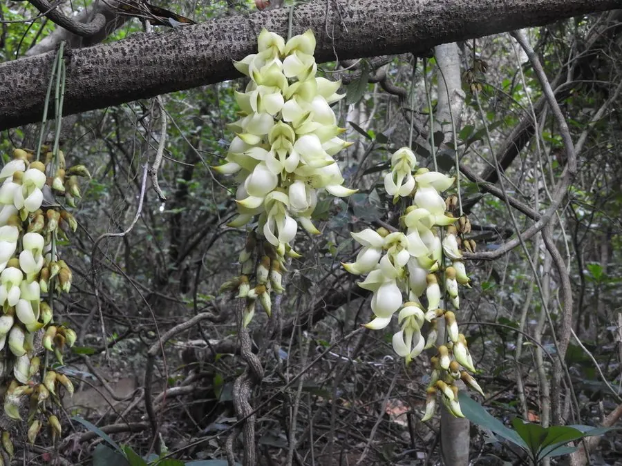

花卉与草本 · 植物界
禾雀花 Mucuna birdwoodiana

豆科黧豆属木质藤本，花序下垂、白色花朵形似成串麻雀，春季盛开时如万鸟栖枝，是华南著名的观花藤本。
- 分类
- 门被子植物门纲木兰纲目豆目科豆科属黧豆属
- 栖息环境
- 海拔 500–1000 米的山地常绿阔叶林，喜温暖湿润、半阴环境
- 地理分布
- 中国广东、广西、江西、福建、香港等地
- 保护级别
- IUCN 暂无评估；野生种群因天然林减少而下降，各地已加强保护
物种志
禾雀花为木质藤本，蔓长可达 10 米以上，茎粗壮、老茎常扭曲。叶为三出复叶，小叶卵形至椭圆形，长 6–12 厘米。总状花序自老茎或叶腋下垂，长 20–40 厘米，花朵白色至淡黄色，长约 4–5 厘米，花萼褐色，花瓣形态酷似收翅的小麻雀，成串悬挂；荚果长条形，长 30–50 厘米，密被褐色毛，种子扁圆。
本种分布于广东、广西、江西、福建、香港等地，生于海拔 500–1000 米的山地常绿阔叶林中，喜温暖湿润、半阴的环境。它先花后叶，花期 3–4 月，盛开时成串白花如万雀栖枝，广州、江门等地每年都举办禾雀花观赏活动。禾雀花的老茎生花现象十分典型，花朵直接开在粗壮的藤茎上。其种子含左旋多巴等成分，不可食用。
形态与习性
- 蔓长可达 10 米以上，老茎粗壮扭曲
- 花期3–4 月，先花后叶，花白色
- 果期8–10 月，荚果长 30–50 厘米
- 光照喜半阴，忌强光暴晒
- 水分喜湿润，适宜年降水量 1500 mm 以上
- 土壤深厚肥沃的酸性红壤
- 主要用途棚架观赏、林下垂直绿化
趣味知识
- 禾雀花的花瓣形态酷似收翅的小麻雀，成串下垂时像万鸟栖枝。
- 它属于“老茎生花”植物，花朵直接开在粗壮的老藤上，而不是新枝顶端。
- 禾雀花的花期只有两三周，华南各地常举办赏花节吸引游客。
- 它的种子含左旋多巴等成分，不可食用，误食可能引起不适。